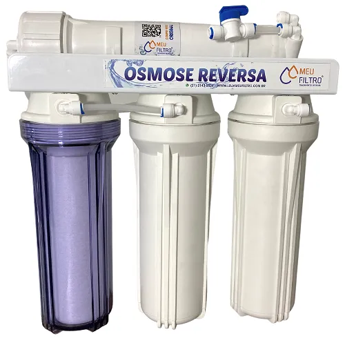

Métodos de Tratamento de Água
Técnicas para purificar água em diferentes situações.
Filtro de Barro
O tradicional filtro brasileiro com velas de cerâmica que remove impurezas e bactérias.
- Custo baixo
- Não precisa de energia
- Eficiência comprovada
Cloração
Adição de cloro para desinfecção, usado em estações de tratamento e emergências.
- Mata bactérias e vírus
- Baixo custo
- Dosagem precisa é crucial

Osmose Reversa
Sistema avançado que remove até 99% dos contaminantes usando membranas especiais.
- Alto custo inicial
- Necessita manutenção
- Ideal para indústrias